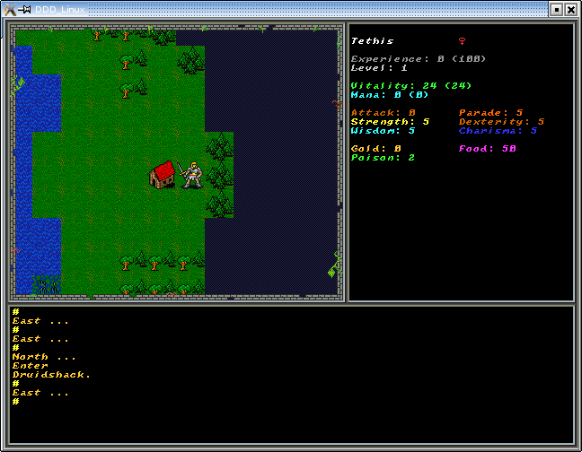
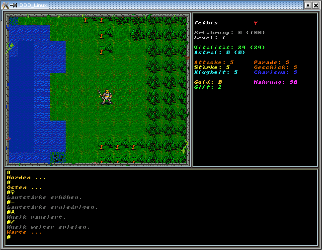
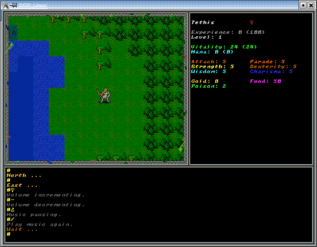

DDD_Linux
A 2D-Roleplaying Game for Linux, Windows and Mac.
Changing Language:
Simply change the Target of the Link in data/DDD_Language.txt to the correct Language-file.
Compiling:
Start the added Makefile with the following commands:
Make debug for the Debug-Version. This Version writes a Logfile in data.
Make release for the Release-Version. This Version strips the Debugsymbols from the File.
Make clean clears the Directory from not more required Files.
Commands:
The Cursor-Keys for the Direction to go.
+ = increments the Soundvolume.
- = decrements the Soundvolume.
* = stop's the Music.
/ = play's the Music again.
s = Searching .... (Treasures)
e = Enter ... (Towns ..)
F9 = Loads a game (data/DDD_Save_....dat) F10 = Saves a game (data/DDD_Save_....dat)
Depends on:
Allegro 4 http://wiki.allegro.cc
Screenshots:

 